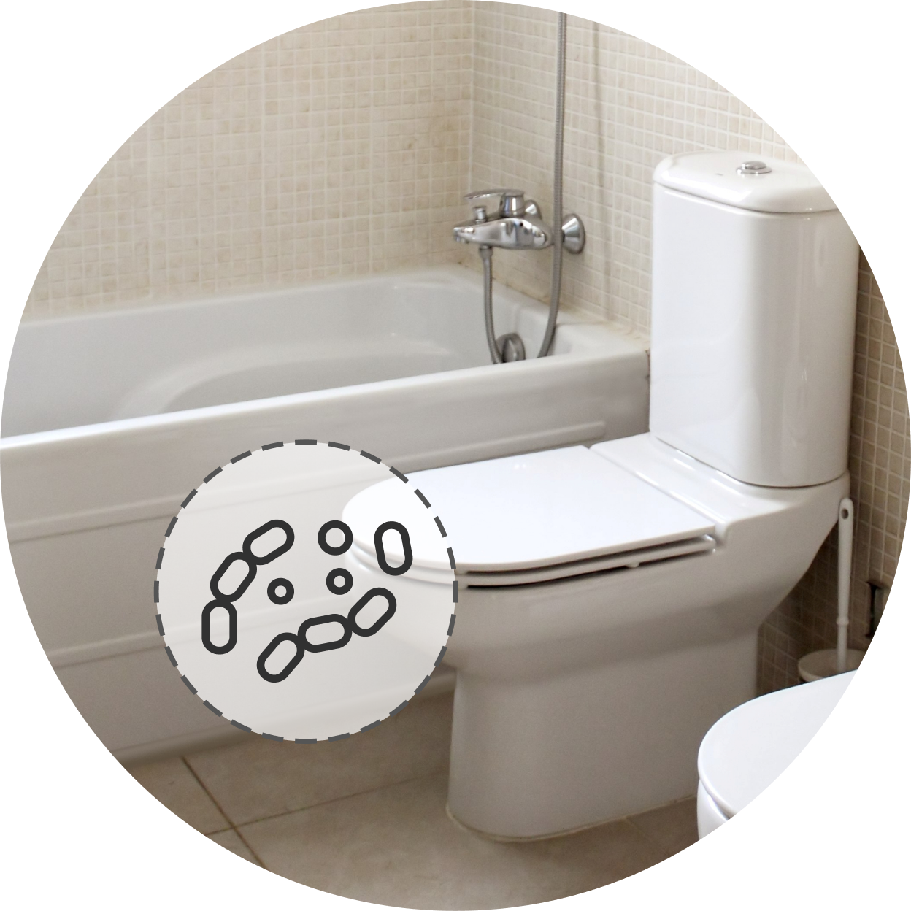

에어기타


보다 더 스마트한 일상
LG ThinQ의 시작

보다 더 스마트한 일상, LG ThinQ
씽큐는 사람과 가전을 AI 기술로 연결하여 더 편리하고 놀라운 일상을 만드는 LG전자의 스마트 홈 플랫폼입니다.
* 본 콘텐츠는 ThinQ 앱의 콘텐츠입니다.
화장실 공기는 세균의 온상일까요?
화장실 공기,
이렇게 하면 깨끗하게 관리할 수 있어요.
화장실의 오염
화장실은 타액, 피부 각질, 소변 및 대변 등 사람의 분비물로부터 나오는 미생물로 오염되기 쉬워요. 특히, 변기나 손잡이 등의 접촉 표면에 다양한 미생물과 인체 관련 세균들이 많아요. 즉, 접촉 표면을 통해 병원체가 전파되고 감염될 수 있다는 걸 의미해요.
세균과 바이러스 병원체를 주입한 변기에서는 물을 내린 후에도 이 미생물들이 공기 중에 떠 있다고 해요. 실제로 살모넬라증이 발생한 가정의 욕실과 변기에서 살모넬라균이 4주간 생존했다고 하고요.
바이오에어로졸은 온도와 습도에 영향을 받기 때문에 시간 별, 계절 별로 오염도가 달라질 수 있어요. 기온과 습도가 높아지는 시기에 바이오에어로졸이 상승할 수 있으므로 특히 화장실을 철저히 청소하고 환기를 자주 시키는 등 위생 관리에 신경 써야 해요.

위생적인 화장실 사용 습관
환기로 온·습도 관리하기
화장실의 온도와 습도가 높아지면 바이오에어로졸이 증가하게 되므로 신경 써서 환기를 해야 해요.
환풍기만으로는 쉽게 제거되지 않는 습도를 방치하면 타일 틈이나 화장실 문에 곰팡이가 피기 쉬워요.
수분 흡수력이 탁월한 굵은소금을 화장실에 두면 공기 중 암모니아를 제거할 수 있어요. 눅눅해진 소금은 전자레인지에 30초 정도 돌리면 다시 습기 제거에 사용할 수 있어요.
-
실내 적정 온·습도 문구
물 내릴 땐 변기 뚜껑을 꼭 닫기
변기의 물을 내릴 때 변기 속의 물이 사방으로 튀게 되어 변기 주변에 놓인 물건들에까지 묻을 수 있으니, 반드시 변기 뚜껑을 닫은 후 물을 내리세요.
문 손잡이는 꼼꼼하게 청소하기
화장실 문 손잡이는 세균 번식이 쉽고 여러 사람이 만지는 곳이므로 주기적으로 꼼꼼히 청소해요.
칫솔 자주 소독하기
습기가 많은 화장실에서는 칫솔에 남은 세균과 미생물이 쉽게 번식할 수 있어요. 칫솔을 햇볕에 말리거나 칫솔살균기를 이용해 완전히 건조 시켜 보관하세요. 칫솔살균기가 없다면 구강청결제에 20분 정도 담가 놓은 후 통풍이 잘되는 곳에서 건조하세요. 칫솔은 일반적으로 2~3개월에 한 번 교체하는 것이 세균 증식을 막는데 효과적이에요.
면도기 날은 녹슬지 않게 보관하기
면도기에 수분이 있거나 습한 곳에 두면 면도날이 녹슬고 세균이 쉽게 증식할 수 있으니, 바람이 잘 통하는 창가나 건조한 곳에 보관해요.
욕실 수건은 자주 교체하기
젖은 수건을 습한 화장실에 오래 방치할 경우 세균이 쉽게 번식할 수 있어요. 특히 피부를 닦고 나면 수건에 피부 각질과 타액 등이 묻을 수 있고, 변기 물이 수건에 튈 수도 있으므로 자주 교체해 사용하는 것이 좋아요.
샤워 후에는 샤워 커튼을 꼭 청소하기
샤워 커튼 청소는 소홀히 하거나 잊어버리는 경우가 많죠. 하지만 씻을 때 나온 신체의 유기물과 비누 거품이 뒤섞여 세균 번식 위험이 높아지므로, 잊지 말고 꼼꼼하게 청소하세요.
화장실을 더 쉽고 깨끗하게 청소하는 꿀팁
물청소는 위에서 아래로 하기
물청소는 높은 곳에서 시작하여, 바닥 타일이나 하수구 등의 낮은 곳을 마지막에 청소하세요.
베이킹 소다로 퀴퀴한 배수구 냄새 잡기!
베이킹 소다에 약간의 물을 섞어 세제처럼 만든 뒤 배수구를 청소하면 퀴퀴한 냄새 등 악취가 나는 것을 잡을 수 있어요.
샤워기 헤드는 식초로 닦기
곰팡이와 세균이 번식하기 쉬운 샤워기 헤드는 큰 비닐봉지에 식초와 따뜻한 물을 1:1 비율로 섞어 넣고 샤워기 헤드를 1시간 정도 담근 다음 청소용 솔로 꼼꼼히 잘 닦아주세요.

치약으로 세면대 청소하기
헌 칫솔에 치약을 묻혀 세면대와 수도꼭지를 닦은 후 흐르는 물로 씻어내면 물때나 얼룩을 쉽게 제거할 수 있어요.
거울은 헤어 린스로 청소해요
부드러운 천이나 부드러운 수세미에 헤어 린스를 묻혀 화장실 거울을 닦아주세요. 린스는 세정제 역할도 하지만 거울에 먼지와 물자국이 생기는 것을 방지하는 코팅제 역할도 해요.
화장실 문을 열어 두어 건조하게 유지하는 것도 좋은 방법이에요.


LG ThinQ
ThinQ 하나로 더 좋아지는 일상
일상을 더 편하고 스마트하게 만들어주는 씽큐 앱을 지금 바로 만나보세요.
- #실내공기
- #화장실
- #화장실공기
- #화장실관리
- #화장실청소
- #화장실광리방법
- #화장실유리관리
출처 및 고지사항
[에코에너지기술연구소] 청소기 클리닝 ATLAS 개발 보고서 (2022.08)